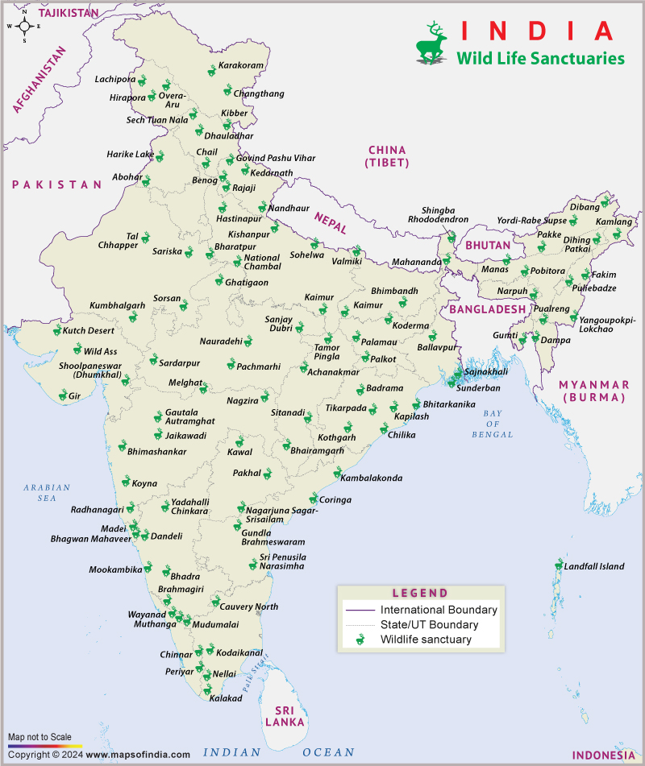
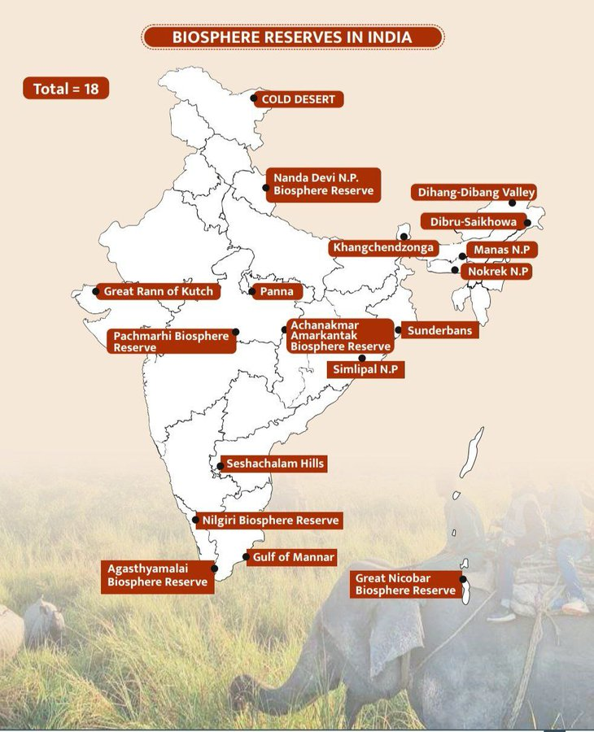
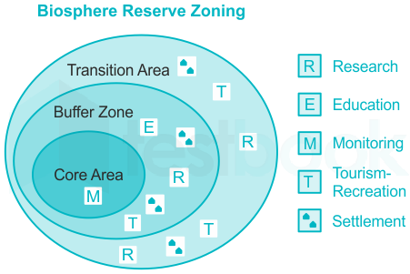

32 Wildlife Sanctuaries And Biosphere Reserves
RESERVES
India is renowned for its vast forests and diverse wildlife. A wildlife sanctuary is a protected area established to conserve plants and animals. Tourism is not allowed in these sanctuaries, as they serve as natural habitats. The Wildlife Protection Act of 1947 created these protected areas. Wildlife sanctuaries in India are classified under IUCN Category IV as protected areas. The Wildlife (Protection) Act of 1972 empowered state governments to declare specific regions as wildlife sanctuaries if they were deemed of ecological, geomorphologic, and natural value.
As of November 2023, India has a total of 573 wildlife sanctuaries, covering 123,762.56 km², or 3.76% of the country’s land area. Additionally, 218 more sanctuaries are proposed in the Protected Area Network Report, covering an area of 16,829 km².

| States/Union Territories | Wildlife Sanctuaries |
|---|---|
| Assam | Nambor WLS, Dihing Patkai WLS, East Karbi Anglong WLS, Chakrashila WLS, Amchang WLS |
| Bihar | Kaimur WLS, Gautam Budha WLS, Pant (Rajgir) WLS, Valmiki WLS |
| Chhattisgarh | Bhairamgarh WLS, Badalkhol WLS, Bhoramdev WLS, Udanti Wild Bufaflo WLS |
| Goa | Bondla WLS, Madei WLS |
| Gujarat | Kutch Desert WLS, Porbandar Lake WLS, Jambugodha WLS, Wild Ass WLS, Ratanmahal WLS, Thol Lake WLS, Sasan Gir Sanctuary, Mitiyala WLS |
| Haryana | Bhindawas WLS, N Khaparwas WLS, Kalesar WLS |
| Himachal Pradesh | Bandli WLS, Daranghati WLS, Dhauladhar WLS, Talra WLS, Pong Dam Lake WLS, Nargu WLS |
| Jharkhand | Lawalong WLS, Parasnath WLS, Palkot WLS |
| Karnataka | Someshwara WLS, Bhadra WLS, Bhimgad WLS, Brahmagiri WLS, Cauvery WLS, Pushpagiri WLS, Sharavathi Valley WLS |
| Kerala | Periyar Wildlife Sanctuary, Chinnar Wildlife Sanctuary, Aralam WLS, Chimmony WLS, Idukki WLS, Malabar WLS |
| Madhya Pradesh | Bori WLS, Gandhi Sagar WLS, Ken Gharial WLS, National Chambal WLS, Orcha WLS |
| Maharashtra | Koyana WLS, Painganga WLS, Bhimashankar WLS, Tungareshwar WLS, Great Indian Bustard WLS |
| Manipur | Yangoupokpi-Lokchao WLS |
| Meghalaya | — |
| Mizoram | Dampa WLS (TR), Ngengpui WLS, Baghmara Pitcher Plant WLS |
| Nagaland | Fakim WLS, Rangapahar WLS |
| Odisha | Baisipalli WLS, Chilika (Nalaban) WLS, Hadgarh WLS, Satkosia Gorge WLS |
| Punjab | Abohar WLS, Harike Lake WLS, Jhajjar Bacholi WLS |
| Rajasthan | Keoladeo Bird Sanctuary, Jawahar Sagar WLS, Mount Abu WLS, Ramsagar WLS, Shergarh WLS |
| Sikkim | Fambong Lho WLS, Kitam WLS (Bird), Maenam WLS |
| Tamil Nadu | Indira Gandhi (Annamalai) WLS, Karaivetti WLS, Pulicat Lake WLS, Vedanthangal WLS, Kalakad WLS |
|---|---|
| Tripura | Gumti WLS, Rowa WLS, Trishna WLS |
| Uttarakhand | Askot Musk Deer WLS, Binsar WLS, Govind Pashu Vihar WLS, Kedarnath WLS, Sonanadi WLS |
| Uttar Pradesh | Hastinapur WLS, Ranipur WLS, Sohagibarwa WLS, Sur Sarovar WLS, Chandraprabha WLS, National Chambal WLS |
| West Bengal | Sunderbans Wildlife Sanctuary, Chintamani Kar Bird Sanctuary, Haliday Island WLS, Ballavpur WLS, Lothian Island WLS, Mahananda WLS |
| Andaman and Nicobar Islands | Bamboo Island WLS, Barren Island WLS, Chanel Island WLS, Peacock Island WLS, Turtle Islands WLS |
| Jammu & Kashmir | Gulmarg WLS, Limber WLS, Nandini WLS |
| Lakshadweep | Pitti WLS (Bird) |
| Dadra Nagar Haveli and Daman and Diu | Dadra & Nagar Haveli WLS, Fudam WLS |
Largest Wildlife Sanctuary: Kutch Desert Wildlife Sanctuary, Gujarat (7,505 km²), home to the Indian Wild Ass. Smallest Wildlife Sanctuary: Sitamata Wildlife Sanctuary, Rajasthan (423.1 km²), known for Leopards and Chinkaras. Oldest Wildlife Sanctuary: Vedanthangal Bird Sanctuary, Tamil Nadu (established 1796), hosting thousands of migratory birds. Newest Wildlife Sanctuary: Madhav National Park, Madhya Pradesh (established 1959), known for Tigers and Leopards. Largest Tiger Reserve: Sundarbans Tiger Reserve, West Bengal (2,585 km²), famous for the Royal Bengal Tiger. Smallest Tiger Reserve: Madhav National Park, Madhya Pradesh (375 km²), home to Tigers and Leopards. Largest Bird Sanctuary: Keoladeo National Park (Bharatpur Bird Sanctuary), Rajasthan (29 km²), hosting over 370 species of birds. Largest Marine Sanctuary: Rani Jhansi Marine National Park, Andaman and Nicobar Islands (256 km²), rich in coral reefs and marine life. Highest Wildlife Sanctuary: Khangchendzonga National Park, Sikkim (1,829m to 8,586m), home to Snow Leopards and Red Pandas. Most Ecologically Diverse Sanctuary: Periyar Wildlife Sanctuary, Kerala (925 km²), known for Elephants, Tigers, and Nilgiri Langurs. Biosphere reserves are large areas that include national parks and animal wildlife sanctuaries. These build a high ratio of natural habitat with constitutional protection under the particular protection policies and arrangements. As of 2024, India has 18 biosphere reserves, 12 of which are part of the UNESCO's Man and Biosphere Reserve (MAB) Programme.

Criteria for Designation of Biosphere Reserves:
1. Effective Protection of Core Area: The core area must be rigorously protected, with minimal human disturbance.
2. Ecological Integrity: The core area should be a distinct biogeographical unit, large enough to sustain a viable population of species across all trophic levels within the ecosystem.
3. Biodiversity Conservation: The site must be of significant value for the conservation of biological diversity.
4. Research and Sustainable Practices: The area should include additional land and water resources suitable for conducting research and demonstrating sustainable management practices.
5. Cultural and Traditional Preservation: The area should support the preservation of traditional tribal or rural lifestyles, fostering a harmonious relationship with the environment.
Zonification of Biosphere Reserves in India
Biosphere reserves are divided into three interrelated zones, each serving distinct functions:

Core Zone
1. The core zone is a strictly protected area within the biosphere reserve, governed by the Wildlife (Protection) Act 1972. Its primary role is the conservation of landscapes, ecosystems, species, and genetic diversity. This zone is off-limits to human activities that could disrupt the natural processes or harm wildlife.
Buffer Zone
2. The buffer zone surrounds or adjoins the core zone. This area allows for activities like scientific research, monitoring, education, and training. Human activities that do not negatively impact the natural ecosystem of the biosphere reserve are permitted here, serving as a transition between the core and more human-influenced areas.
Transition Zone
3. The transition zone is the outermost region of the biosphere reserve. It supports sustainable economic and human activities, including agriculture and settlements. This zone enables local communities to engage in practices that are compatible with conservation efforts.
BIOSPHERE RESERVE OF INDIA
| Name | Year of Notification | Location |
|---|---|---|
| Nilgiri Biosphere Reserve | 1986 | States: Tamil Nadu, Kerala, Karnataka Locations: Wayanad, Nagarhole, Bandipur, Madumalai, Nilambur, Silent Valley, Siruvani Hills |
| Nanda Devi Biosphere Reserve | 1988 | State: Uttarakhand Locations: Chamoli, Pithoragarh, Almora districts |
| Nokrek Biosphere Reserve | 1988 | State: Meghalaya Locations: East, West, and South Garo Hills districts |
| Great Nicobar Biosphere Reserve | 1989 | State: Andaman and Nicobar Islands Location: Southernmost region of the island |
| Gulf of Mannar Biosphere Reserve | 1989 | State: Tamil Nadu Locations: From Rameswaram island (North) to Kanyakumari (South) |
| Manas Biosphere Reserve | 1989 | State: Assam Locations: Kokrajhar, Bongaigaon, Barpeta, Nalbari, Kamrup, Darang districts |
| Sunderbans Biosphere Reserve | 1989 | State: West Bengal Location: Delta of Ganges and Brahmaputra river system |
| Simlipal Biosphere Reserve | 1994 | State: Odisha Location: Mayurbhanj district |
| Dibru – Saikhowa Biosphere Reserve | 1997 | State: Assam Locations: Dibrugarh and Tinsukia districts |
| Dehang-Dibang Biosphere Reserve | 1998 | State: Arunachal Pradesh Locations: Upper Siang, West Siang, Dibang Valley districts |
| Pachmarhi Biosphere Reserve | 1999 | State: Madhya Pradesh Locations: Betul, Hoshangabad, Chhindwara districts |
| Khangchendzonga Biosphere Reserve | 2000 | State: Sikkim Locations: North and West districts |
|---|---|---|
| Agasthyamalai Biosphere Reserve | 2001 | States: Tamil Nadu, Kerala Locations: Tirunelveli, Kanyakumari (TN); Thiruvananthapuram, Kollam, Pathanamthitta (Kerala) |
| Achanakmar-Amark antak Biosphere Reserve | 2005 | States: Madhya Pradesh, Chhattisgarh Locations: Anuppur, Dindori (MP); Bilaspur (CG) |
| Kachchh Biosphere Reserve | 2008 | State: Gujarat Locations: Kachchh, Rajkot, Surendranagar, Patan districts |
| Cold Desert Biosphere Reserve | 2009 | State: Himachal Pradesh Locations: Pin Valley NP, Chandratal, Sarchu, Kibber wildlife sanctuary |
| Seshachalam Hills Biosphere Reserve | 2010 | State: Andhra Pradesh Locations: Chittoor and Kadapa districts in the Eastern Ghats |
| Panna Biosphere Reserve | 2011 | State: Madhya Pradesh Locations: Panna, Chhatarpur districts |
UNESCO BIOSPHERE RESERVE OF INDIA
| Sl. No. | Name | Year | State |
|---|---|---|---|
| 1 | Nilgiri Biosphere Reserve | 2000 | Tamil Nadu, Kerala, and Karnataka |
| 2 | Gulf of Mannar Biosphere Reserve | 2001 | Tamil Nadu |
| 3 | Sunderbans Biosphere Reserve | 2001 | West Bengal |
| 4 | Nanda Devi Biosphere Reserve | 2004 | Uttarakhand |
| 5 | Similipal Biosphere Reserve | 2009 | Odisha |
| 6 | Pachmarhi Biosphere Reserve | 2009 | Madhya Pradesh |
| 7 | Nokrek Biosphere Reserve | 2009 | Meghalaya |
| 8 | Achanakmar-Amarkantak Biosphere Reserve | 2012 | Madhya Pradesh and Chhattisgarh |
| 9 | Great Nicobar Biosphere Reserve | 2013 | Andaman and Nicobar Islands |
|---|---|---|---|
| 10 | Agasthyamalai Biosphere Reserve | 2016 | Tamil Nadu and Kerala |
| 11 | Khangchendzonga Biosphere Reserve | 2018 | Sikkim |
| 12 | Panna Biosphere Reserve | 2020 | Madhya Pradesh |
Largest Biosphere Reserve: Gulf of Mannar (10,500 km²) in Tamil Nadu, known for its rich marine biodiversity. Smallest Biosphere Reserve: Nokrek (820 km²) in Meghalaya, home to the red panda and tropical rainforests. Highest Biosphere Reserve: Khangchendzonga in Sikkim, spanning from 1,829 m to 8,586 m, with diverse alpine and subtropical ecosystems. Lowest Biosphere Reserve: Great Nicobar in Andaman and Nicobar Islands, located at sea level, rich in unique mangrove and tropical ecosystems. Most Biodiverse Biosphere Reserve: Nilgiri (5,520 km²) in Tamil Nadu, Kerala, and Karnataka, housing elephants, tigers, and rare flora. Most Recent Biosphere Reserve: Panna (2020) in Madhya Pradesh, known for its thriving tiger population and waterfalls. Largest Marine Biosphere Reserve: Gulf of Mannar (10,500 km²), India’s largest marine ecosystem, with coral reefs and sea turtles. Richest in Cultural Heritage: Sunderbans in West Bengal, a UNESCO World Heritage Site, is home to the Royal Bengal Tiger and unique wetlands. Unique Wetland Ecosystem: Sunderbans in West Bengal, is renowned for its mangrove forests and aquatic biodiversity.
Difference between Wildlife Sanctuaries and Biosphere Reserves
| Aspect | Wildlife Sanctuary | Biosphere Reserve |
|---|---|---|
| Scope of Protection | Protects primarily wild animals | Protects entire ecosystems, including plants and animals |
| Human Activity | Allows some activities with minor restrictions | Stricter regulations; core areas have no human activities |
| Boundary Defni ition | Boundaries are often not fxied | Boundaries are fxied and designated by the government |
| Ownership | It can be government or privately owned | Generally owned and managed by government authorities |
| Size and Area | Typically covers a smaller area | Generally encompasses a larger area to maintain ecological diversity |